| 編號 | 照片 | 名稱 |
| 01 | 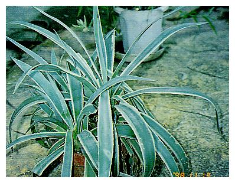 | 白緣龍舌蘭 |
| Agave angustifolaicv. 'Marginata' | ||
| 龍舌蘭科 Agavaceae | ||
| 介紹 | 常綠灌木狀，株高可達一公尺，莖短，葉肉質，葉中間大部分綠色兩側邊緣白色或黃白色，葉緣有鋸齒，輪生。老株能開花，開花後會老化而死。龍舌蘭科植物喜高溫耐乾燥，陽光充足生育良好，繁殖可用分株法或取花梗上之芽體或以地下莖長出之不定芽來繁殖，春至秋季為適期。 | |
| 編號 | 照片 | 名稱 |
| 02 | 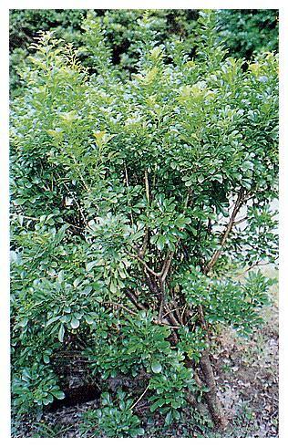 | 樹蘭、珠蘭 |
| Aglaia odorata Lour. | ||
| 楝科 Meliaceae | ||
| 介紹 | 常綠小喬木或灌木，葉為奇數羽狀複葉，小葉5～7枚橢圓形或卵形葉內無油腺，這是最易與月橘分辨 之處，葉片革質有光澤，圓錐花序腋生，花瓣5枚，子房被毛，花期7～10月有芳香。果為漿果，一般栽培種甚少結果，繁殖以高壓法，花朵可做為茶葉之香料。 | |
| 編號 | 照片 | 名稱 |
| 03 | 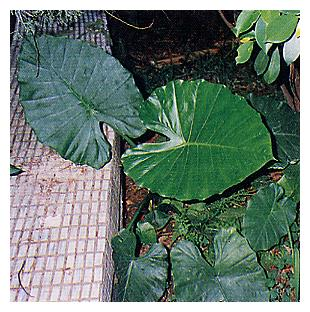 | 姑婆芋、天荷 |
| Alocasia macrorrhiza(Linn.) Schott. | ||
| 天南星科 Araceae | ||
| 介紹 | 多年生草本，根莖粗大，高可達80cm以上，寬可達60cm以上，全緣或波狀緣，葉基部深凹形，葉脈大而明顯。花多數長在肉質花軸上，初時包藏於佛燄狀大型苞片內，漿果熟時紅色，產於全省陰濕林下。 葉柄粗大，葉子大形，可充當野外遮雨之用。塊莖富含澱粉，野豬常以其為食物，但人不可食之。全株之汁液及塊莖有毒，全草搗碎可敷蜂螫，腫毒及治皮膚病，卅年以前常以其葉子包裹豬肉等物。 | |
| 編號 | 照片 | 名稱 |
| 04 | 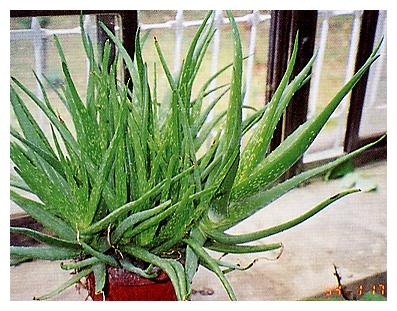 | 蘆薈 |
| Aloe vera (L.)Webb. var. chinensis Haw. | ||
| 百合科 Liliaceae | ||
| 介紹 | 多年生肉質草本，株高30～50cm，葉劍形，肥厚多汁，橫切面呈半圓狀，葉端尖，邊緣有齒狀刺，色淡綠，有白斑紋，肉質環抱莖成放射狀。夏天自葉腋抽生直立的總狀花序，花冠桔紅，長筒狀下垂，先端六裂，雄蕊六枚，雌蕊一枚，蒴果，種子多數，原產非洲，種類多，原為埃及王朝之菜用植物。蘆薈乾味苦如動物膽肝，故稱為象膽。 | |
| 編號 | 照片 | 名稱 |
| 05 | 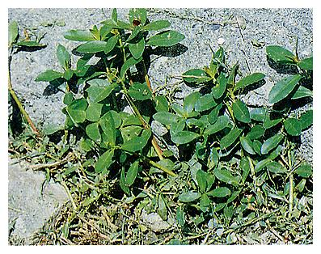 | 長梗滿天星、空心蓮子草、空心莧 |
| Alternanthera philoxeroides | ||
| 莧科 Amaranthaceae | ||
| 介紹 | 多年生草本，莖匍匐地面，基部節處生不定根，葉對生，先端銳尖，兩面平滑，花序圓球形，具長總梗，腋出或頂生，花密生，初為淡紅或紫紅色，漸變為銀白色，花被乾膜質，有光澤，花較萼為短，萼為皮質，披針形，尖頭，雄蕊5枚，胞果圓球形，成熟後黑色，嫩莖葉可食，全草具清熱，利尿，解毒之效，主治腎臟炎，痢疾。 | |
| 編號 | 照片 | 名稱 |
| 06 | 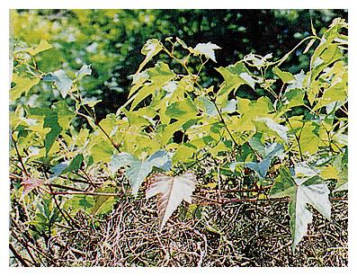 | 漢氏山葡萄、山葡萄、野葡萄、蛇葡萄 |
| Ampelopsis brevipedunculatavar. hancei (Planch) Rehder | ||
| 葡萄科 Vitaceae | ||
| 介紹 | 多年生，落葉，大藤本狀草本，莖甚長，木質化，具有二分叉狀卷鬚。葉三角狀心形，常作3～5淺裂，互生，鋸齒緣，葉表面光滑無毛，葉背淡綠色。夏季開花，聚繖花序，花細小，黃綠或淡綠，花瓣五片，雄蕊五枚，漿果球形，小形，初為綠白色後轉淡紫，最後變成碧藍色，內有種子3～4粒。 山葡萄之根煎汁可用來洗滌眼疾及刀傷，根煮蛋可治療耳疾，果實榨汁可治腫毒，惡瘡，但要注意，孩童若食用果實，常造成嘔吐，腹痛，腹瀉。 | |
| 編號 | 照片 | 名稱 |
| 07 | 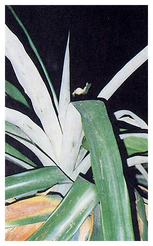 | 鳳梨、波蘿 、旺來、黃梨 |
| Ananas comosus Merr. | ||
| 鳳梨科 Bromeliaceae | ||
| 介紹 | 多年生草木，根除了深入土中外，有些會長在地面，有些則長在吸芽基部。莖葉短，為叢生葉所包圍，葉螺旋狀輪生，葉面平滑，葉緣有小刺，葉身為劍形。春季至夏季開花，花軸自葉叢中抽出，穗狀花序由多數粉紅色花所組成，小花密生，並有苞片保護。花托膨大，花被六片，雄蕊6枚，柱頭3裂，子房下位。多花聚合果柔軟多肉，成熟時變成黃色，頂上叢生數葉，可以之繁殖。 果實有防胃腸癌的作用，除食用外可製鳳梨酒，作強健藥；莖可提取消化酵素作消化藥。 | |
| 編號 | 照片 | 名稱 |
| 08 | 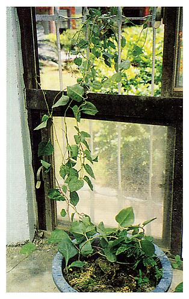 | 洋落葵、雲南白藥 |
| Anredera scandens | ||
| 落葵科 Basellaceae | ||
| 介紹 | 常綠蔓性藤本植物，蔓性強，嫩枝紅色；葉互生，卵形或卵圓形；春末至秋天開花，穗狀花序淡黃色。老莖蔓能結塊狀零餘子，生性強健，全日照，半日照均能生長，栽培土質以富有機質之壤土或砂壤土為佳，排水力求良好。 葉以快火炒食加薑及肉片，味佳，此外，莖葉是著名之雲南白藥的主要材料。常綠小喬木，株高約1～2公尺，葉退化成小枝狀，輪生，具6～8稜角，各葉有6～8鞘齒，春季4～5月開花，雄花灰褐色，雌花紅色，瘦果橢圓形，耐旱、耐鹽、抗風。 | |
| 編號 | 照片 | 名稱 |
| 09 | 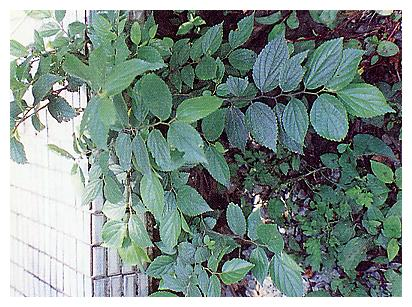 | 糙葉樹 |
| Aphananthe aspera Planch | ||
| 榆科 Ulmaceae | ||
| 介紹 | 落葉性大喬木，葉薄，革質，互生，卵形至卵狀長橢圓形，長3～6cm，寬2～3cm，先端漸尖，基部圓形具短柄，鋸齒緣，核果球形。 木材可做傢俱，莖皮可製纖維。 | |
| 編號 | 照片 | 名稱 |
| 10 | 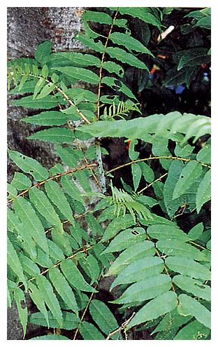 | 刺璁 |
| Aralia decaisneana Hance | ||
| 五加科 Araliaceae | ||
| 介紹 | 落葉小喬木，植株直立莖皮具瘤刺，小枝有銳刺及褐色絨毛。二回奇數羽狀複葉，小葉7～11枚，卵形至長卵形，長8～15公分，寬4～8公分，先端漸尖，基部圓或略心形，鋸齒緣，表面有絨毛具短柄。圓錐狀繖形花序腋生，被絨毛，花瓣5枚，三角狀卵形，果實球形，表面有五縱稜，花期五月，九月結果。 刺璁之根可入藥，有袪風除濕之效。 | |
| 編號 | 照片 | 名稱 |
| 11 | 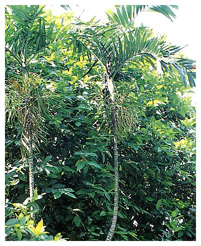 | 叢立檳榔 |
| Areca triandra | ||
| 棕櫚科 Palmae | ||
| 介紹 | 單幹通直，葉脫落後留下明顯環節，羽狀複葉叢生於幹頂，小葉多數披針形，約40～60cm，雌雄同株，肉穗花序由葉鞘下部生出，夏季開花雄花小形，密生小梗先端，雌花較大，著生於小梗基部，核果橢圓形。 | |
| 編號 | 照片 | 名稱 |
| 12 | 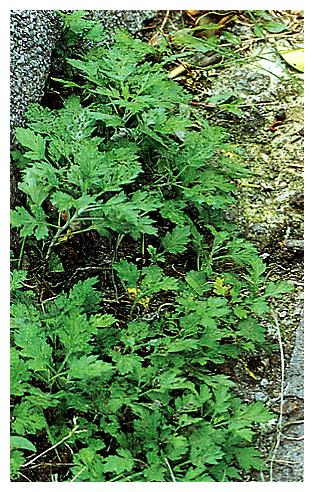 | 艾草 |
| Artemisia princepsvar. orientalis | ||
| 菊科 Compositae | ||
| 介紹 | 多年生草本，葉互生，羽狀分裂，葉柄基部延伸成翼狀表面綠色，葉背密生白毛，莖葉均有特殊之香氣。頭狀花序，瘦果圓柱形，有冠毛。 艾草之莖葉搗碎混入米漿或粉團內可製成粿，糕餅之類食物；莖葉曬乾可燃燒以驅蚊。全草有調經止血，安胎止崩，散寒除濕等功效，治月經不調，經痛腹痛，先兆性流產，功能性子宮出血，風濕關節炎，頭風及月內風等，但血熱而燥的人禁用。 | |
| 編號 | 照片 | 名稱 |
| 13 | 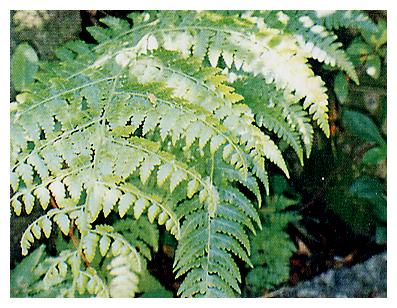 | 假蹄蓋蕨 |
| Athyriopsis petersenii(Kunze) Ching | ||
| 蹄蓋蕨科 Athyriaceae | ||
| 介紹 | 根莖長匍匐狀，鱗片披針狀，棕色，葉疏生，柄長10～30公分，葉片15～40公分，卵狀披針形，二回羽狀深裂，最基部羽片稍縮短，側羽片3～10cm長。 | |
| 編號 | 照片 | 名稱 |
| 14 | 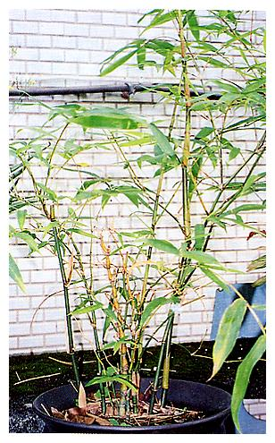 | 胡蘆竹 |
| Bambusa ventricosamcClure. | ||
| 禾本科 Gramineae | ||
| 介紹 | 多年生木本植物，節間膨大如胡蘆，故名胡蘆竹，盆栽胡蘆竹只能長高2公尺左右，但若栽植於地面則可長至15～20公尺高，葉長也可達15公分。 胡蘆竹的稈柄合軸叢生，短縮肥大，具有緊密細節，節間上密生有不定根。芽球卵形，每年5～9月間在老幹枝旁會長出小小的竹筍出來，擇葉大、三角形。在節上能長出叢生之稈節，枝節上有短刺1～3枝或縮短枝，葉長橢圓狀針形或卵形，長6～12cm，寬3～5cm，先端漸尖而呈短尾狀，基部鈍或圓鈍，葉柄短，葉舌明顯。葉全緣一邊或兩邊有刺毛，平行脈。花是由小穗上多數之花組成，合成圓球狀之花叢，兩性花，在小穗上部是雄花，下部者為不孕之雌花。果實為穎果，橢圓或長橢圓形。 竹類不易開花，數十年才開花，開花後即漸萎凋死亡。 | |
| 編號 | 照片 | 名稱 |
| 15 | 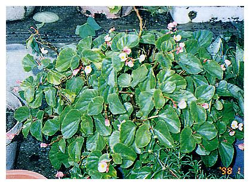 | 四季秋海棠、洋秋海棠 |
| Begonia Xsemperflorens-cultorum Hort. | ||
| 秋海棠科 Begoniaceae | ||
| 介紹 | 多年生宿根草本，株高約15～20cm，葉卵圓形或歪心形，葉上有細絨毛，有疏鋸齒緣，表面亮綠色，聚繖花序頂生或腋生，花粉紅色，單性，雌雄同株，雄花花瓣四枚兩大兩小，雌花花瓣4或5枚，子房外有三稜脊，果為蒴果，表面有三個翼。花期從秋季至春季，花形有單瓣或重瓣，花色有橙紅、 緋紅、粉紅、白或複色，繁殖以播種，阡插或分株法。 | |
| 編號 | 照片 | 名稱 |
| 16 | 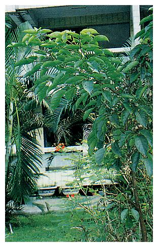 | 重陽木、茄苳 |
| Bischoffia javanica Blume | ||
| 大戟科 Euphorbiaceae | ||
| 介紹 | 常綠或半落葉性大喬木，葉互生葉柄長，鈍鋸齒緣，小葉卵形或卵狀長橢圓形。雌雄異株，圓錐花序，腋生，雄花分枝甚多無花瓣，雌蕊5枚。雌花分枝較少，子房3室，1～3月開花，漿果球形。 果實可食，葉子晒乾泡茶喝，有解熱效果，漿果煎服可治遺精，解熱利尿，葉有解熱消炎之功效，可治肺炎腹痛，樹皮煎服可治風濕性關節炎、哮喘。 | |
| 編號 | 照片 | 名稱 |
| 17 | 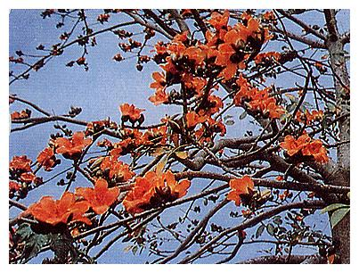 | 木棉、斑芝樹 |
| Bombax ceiba L. | ||
| 木棉科 Bombaceae | ||
| 介紹 | 落葉喬木，樹幹有瘤刺，掌狀複葉，冬日葉片落光，三月開花後長新葉。花期短，約三至四星期。花黃紅色，花瓣五片，肉質可食，兩性花，小蕊甚多連成6束。蒴果，種皮上有絲狀毛，五月底，風吹則白色棉絮狀絲狀毛隨風在空中飄動，種子可榨油，木材可製火柴桿。種子上之棉絮可填塞棉被、枕頭、棉衣等，繁殖可用播種或扦插。木棉是高雄市、台中縣之縣(市)樹。 | |
| 編號 | 照片 | 名稱 |
| 18 | 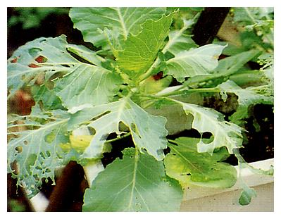 | 甘藍菜、高麗菜 |
| Brassica oleracea L.var. capitata L. | ||
| 十字花科 Cruciferae | ||
| 介紹 | 越年生草本，開花時高可達一公尺許，葉厚，紙質，寬大平滑無毛，藍綠色帶白粉狀，邊緣具不整齊鋸齒，層層重疊覆蓋而成球狀。甘藍在冬末春初開花，花莖頂端為總狀花序或圓錐花序，花黃色，花瓣四片，十字形花冠，萼片長橢圓形，雄蕊六枚，雌蕊一枚。甘藍菜含鈣、磷、氯、碘等元素，也含維生素A、B2、C及K、U等。具清熱止痛，利關節之功效，主治胃及十二指腸潰瘍，腸胃痛，關節不利，火燙傷，腎虛等。 | |
| 編號 | 照片 | 名稱 |
| 19 | 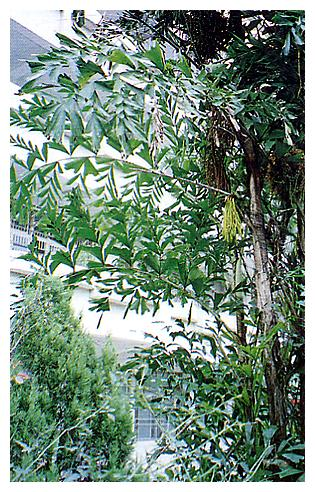 | 叢立孔雀椰子 |
| Caryota mitis Lour. | ||
| 棕櫚科 Palmae | ||
| 介紹 | 長綠木本狀；幹單一直立叢生葉脫落後留下明顯環節。二回羽狀複葉長1～3公尺，柄基鞘狀抱莖；小葉互生，鰭形，頂端截形具不規則齒裂。肉穗花序腋生，長約30公分，下垂，狀如掃帚，花小形，單性，雌雄同株。果實近球形，徑約1.2公分，每年三月至六月開花，果實成熟時為暗色。 叢立孔雀椰子除供觀賞外，花軸之汁可釀酒，人的皮膚碰觸到成熟果實的汁液時會有紅腫發癢的現象。 | |
| 編號 | 照片 | 名稱 |
| 20 | 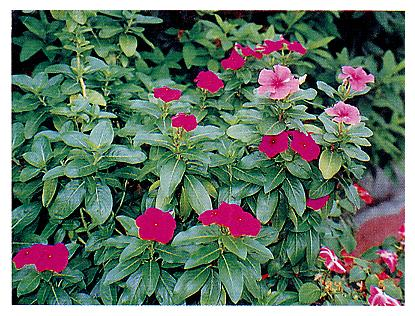 | 長春花、日日春 |
| Catharanthus roseus (L.)Don. | ||
| 夾竹桃科 Apocynaceae | ||
| 介紹 | 一、二年生草本植物，葉對生，橢圓形，中肋明顯，全緣，膜質，濃綠色有光澤，全株無毛，莖葉內有白色有毒汁液。全年均可不斷開花，花徑可達5公分，花開在莖頂或葉腋處，有時為單花有時兩三朵簇生成傘狀花序。花冠上有多種顏色，上端裂為五片，下部為長筒，花蕊深藏在長筒中，花謝後結出瘦長之蓇葖果，似綠豆莢，有毒。 以種子繁殖或插枝繁殖。全草具抗癌軟堅，消炎止痛，降壓，安神功效，主治急性淋巴細胞白血病，肺癌，巨細胞性淋胞腫瘤，也可治高血壓、糖尿病、霍亂、腸炎、扁桃腺炎、腮腺炎等。 | |
| 編號 | 照片 | 名稱 |
| 21 | 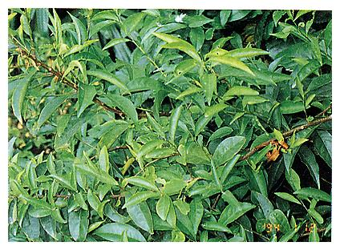 | 夜丁香、葉香木、木本夜來香 |
| Cestrum nocturnum L. | ||
| 茄科 Solanaceae | ||
| 介紹 | 常綠蔓性灌木，小枝光滑有稜，葉長卵形或橢圓形，長10～20cm，寬約3cm，兩面亮綠，先端漸尖。花簇生於葉腋，黃綠色有芳香，花冠長筒狀，筒部纖細，口部略膨大，5裂。春至夏天日落黃昏後開花，陣陣濃郁香氣四溢。可以扦插繁殖。 | |
| 編號 | 照片 | 名稱 |
| 22 | 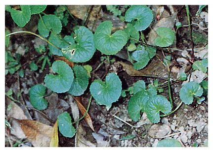 | 雷公根、含殼草、銅錢草、地棠草 |
| Centella asiatica（L.）Urban | ||
| 繖形科 Umbelliferae | ||
| 介紹 | 多年生匍匐性草本，全株有細毛，莖常帶淡紫紅色，匍匐地面，節間甚長，節上生根及葉。根生葉具長柄約10公分左右，葉片圓腎形，鈍鋸齒緣，長寬各約2～5cm，葉柄連接處深凹陷。頭狀繖形花序腋生，花紅褐色，細小卵形，3～6朵花，花瓣5片，雄蕊5枚，果實扁平橢圓形。 嫩莖葉可作菜洗淨後以大火快炒肉絲或加大蒜素炒，味佳，全草具活血舒經，清熱解毒，利尿消炎功效，主治感冒咳嗽，中暑發痧，肺炎，喉炎，扁桃腺炎，慢性肝炎，傳染性肝炎，胃腸炎，尿道炎，陰道炎，月經不調，白帶等。 | |
| 編號 | 照片 | 名稱 |
| 23 | 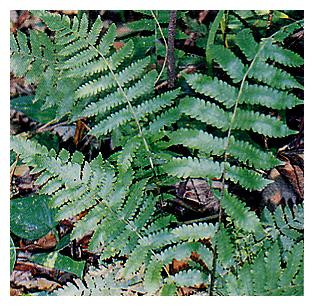 | 毛蕨、金星草 |
| Christella acuminata(Houtt.) L'ev. | ||
| 金星蕨科 Thelypteridaceae | ||
| 介紹 | 全身密被毛茸，根莖短而斜上，葉叢生，20～30cm長，葉片30～45cm長，寬約10cm二回羽狀淺裂，羽片互生，平出，無柄，小羽片鈍頭。孢子囊群呈淡紅褐色，在接近羽軸處。 | |
| 編號 | 照片 | 名稱 |
| 24 | 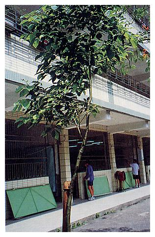 | 樟、本樟、栳樟 |
| Cinnamomum camphora(Linn.) Sieb | ||
| 樟科 Lauraceae | ||
| 介紹 | 常綠大喬木，高可達50公尺，樹幹近地面3～5公尺處筆直，其上分叉，根、莖、葉均具樟腦氣味。樹皮暗褐色有縱裂，葉互生，卵形，三出脈全緣，革質或紙質有光澤。圓錐花序腋生，黃綠色花被6片，雄蕊12枚，子房卵形，柱頭盤狀，漿果球形成熟時紫黑色。樟樹幼株若種在不通風處，易長介殼蟲。成年老樹樹冠茂密，遮陰效果佳，樹葉含樟腦油，有天然殺菌作用。抗污染力強，能吸收噪音為優良之庭園樹及行道樹，尤其是在大型公共場合如兵營、學校，種在廁所附近，大有奇效。 全株含樟腦油，用來提煉樟腦油供做藥用及殺蟲，樹幹可供建築、雕刻、製造箱櫃等。枝葉以酒煎服，可治消化不良，用水煮汁可用來洗滌腳氣、疥癬等，根可做強心劑。 樟樹是苗栗、南投、雲林、台南四縣之縣樹，也是樹林鎮之鎮樹。 | |
| 編號 | 照片 | 名稱 |
| 25 | 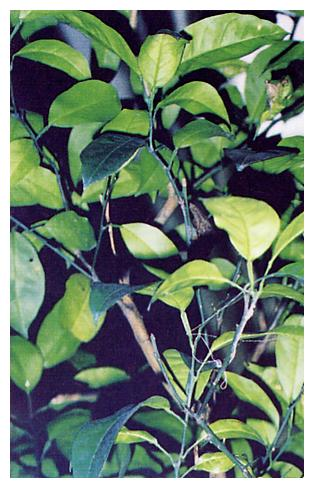 | 柚子 |
| Citrus grandis Osbeck. | ||
| 芸香科 Rutaceae | ||
| 介紹 | 常綠喬木，莖上有刺，複葉、葉上密佈油腺。二、三月時開花，聚繖花序生於枝端葉腋，花白色富香氣、花瓣4～5枚，雄蕊4～5枚，雌蕊一本，子房球形。果實大，果皮厚而粗油腺大，果形及果肉顏色視品種而異。 | |
| 編號 | 照片 | 名稱 |
| 26 | 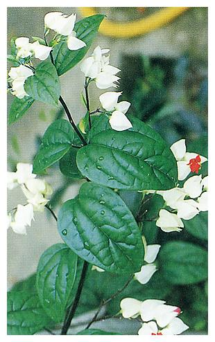 | 龍吐珠、珍珠寶蓮 |
| Clerodendrum thomsonaeBalf. f. | ||
| 馬鞭草科 Verbenaceae | ||
| 介紹 | 常綠藤本，在本省北部冬季常落葉，春天再萌新葉，葉對生，長卵形，先端漸尖，基部近心形。聚繖花序，腋生或頂生，花萼白色五片，燈籠狀；花冠筒細長，裂片紅色。核果，存於宿存萼內，中有黑色種子4粒，春季開花，白中一點紅，一般以阡插繁殖。 | |
| 編號 | 照片 | 名稱 |
| 27 | 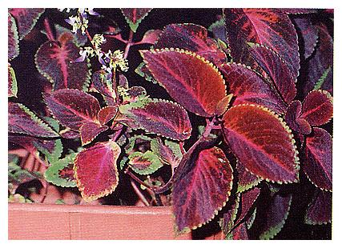 | 彩葉草、鞘蕊花 |
| Coleus X hybridus Voss. | ||
| 唇形科 Libiatae | ||
| 介紹 | 常綠多年生草本或亞灌木，葉紙質或膜質，卵形至圓形，鋸齒緣或齒緣，先端銳至漸尖；葉片鑲嵌著五彩繽紛的明豔色彩，以紅色為主，間雜有紅色、黃色、綠色、黑色、紫色等。圓錐花序頂生，花藍色或白色，果實含4枚小堅果。 彩葉草生性強健耐旱、耐濕，光照愈足色彩愈燦爛，夏季開花，繁殖以播種或阡插均可，春、秋季為適期。 | |
| 編號 | 照片 | 名稱 |
| 28 | 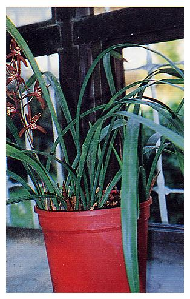 | 報歲蘭 |
| Cymbidium sinense Willd. | ||
| 蘭科 Orchidaceae | ||
| 介紹 | 地生蘭，假球莖叢生，闊卵形，長3～4cm，寬2～2.5cm，無莖，葉2～4枚，基生叢生，披針形或線狀披針形，長35～60cm，寬15～2.8cm，先端漸尖，基部楔形，表面呈有光澤之暗綠色，背面顏色較淡，革質，葉脈平行脈1～3條，隆起於背面，全緣。 冬末初春開花，花有幽香，俗稱王者之香，總狀花序花莖長約40～70cm，抽自於假球莖，基部光滑。花梗連同子房長2.5～3.5cm，萼片擴展，線狀披針形，蘭花為宜蘭縣之縣花。 蘭花之根為氣生根，栽植處須空氣流通，排水良好，日照不可太強，約50%即可。 | |
| 編號 | 照片 | 名稱 |
| 29 | 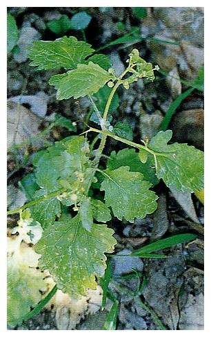 | 土茯苓、茯苓菜、豬菜草 |
| Dichrocephala bicolor(Rolh) Schlechtendal. | ||
| 菊科 Compositae | ||
| 介紹 | 具有香味之多年生草本莖甚長約20～40cm有毛茸，基部直立或呈匍匐狀，通常近基部處有分枝。葉形多變化，生長於莖下者多呈七弦琴狀，長7～13cm，寬4～5cm，先端鈍，邊緣羽狀裂，莖生葉卵形至倒卵形狀長橢圓形，數小不規則鈍粗鋸齒；最上位者狹長橢圓形，長1.5～2cm，不分裂。葉互生，葉柄長，葉有短毛，頭狀花序呈總狀排列，花梗長4～5cm。瘦果扁平，倒披針狀長橢圓形。 幼苗及嫩莖葉可食，春季採食最佳。 | |
| 編號 | 照片 | 名稱 |
| 30 | 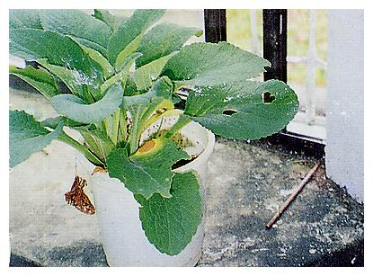 | 毛地黃 |
| Digitalis purpurea L. | ||
| 玄參科 Scrophulariaceae | ||
| 介紹 | 多年生草本，莖高九十至一百六十公分，直立不分枝或數枝叢生，除花冠外，全體披灰白色短柔毛和腺毛，有時莖上無毛。葉呈卵狀長橢圓形，基生葉多成蓮座狀，莖下部之葉與基生葉同形，均具葉柄，葉片長卵形，兩端急尖或鈍，邊緣常具圓齒，下面網脈明顯。上部之葉無柄或具短柄，葉面皺縮，葉緣有鋸齒。 春末至夏天，開花，長總狀花序或近似穗狀花序頂生，由下向上依序開放，花期長達兩個月。花萼鐘狀五裂，花冠紫紅或白，有深色斑點，花冠筒狀鐘形，雄蕊四枚，二長二短，蒴果卵形，具宿萼，種子小而多，被毛。 葉為強心藥材，但毒性強，慎用。 | |
| 編號 | 照片 | 名稱 |
| 31 | 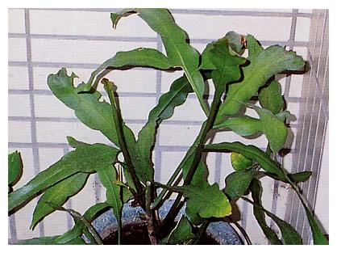 | 曇華、曇花、瓊花、月下美人 |
| Epiphyllum oxypetalum(DC.) Haw | ||
| 仙人掌科 Cactaceae | ||
| 介紹 | 多年生肉質性植物，高可達5公尺餘，老莖圓柱形棒狀其餘呈扁平狀，節間甚長，葉狀莖長15至40公分，寬約6公分，邊緣波狀、綠色，老莖木質化，枝分歧或羽狀；全株平滑無毛無刺。每年5~11月開花，花朵單生於葉狀莖上的凹缺處，有花蕾的凹缺處不抽枝，若有抽枝則不生花蕾，花在夜間綻放，潔白幽香，花筒基部褐色，花凋零後仍懸於母株上數天。萼片多數，細線形，花瓣多數，長匙形，雄蕊亦多數，柱頭多裂。 曇花之花凋後採下稍加漂洗加肉絲煮湯味佳，花含膠質，醣類及瓷，可治便秘、哮喘 、肺炎、高血壓、血脂肪過高症。 | |
| 編號 | 照片 | 名稱 |
| 32 | 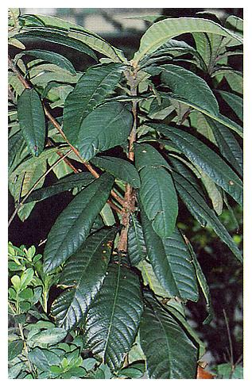 | 枇杷 |
| Eriobotrya japonica Lindl. | ||
| 薔薇科 Rosaceaee | ||
| 介紹 | 綠小喬木，全株密被淡褐色絨毛。葉互生長橢圓形，呈簇生狀，葉大而厚 ，粗糙鋸齒緣，圓錐花序，頂生，每一花序著生60～200枚花，有淡褐色絨毛，花白色，花瓣五片，雄蕊約20枚，九到一月開花，果實球形或長圓形，果皮外被絨毛，熟時果皮黃或金黃色，果肉多汁味酸甜，中央有種子1～3顆，果實五月成熟金黃色，有「五月琵琶黃似橘」的詩句。 種子和幼芽有毒，誤食多量會有頭昏、噁心、嘔吐、呼吸困難、肌肉痙攣等現象，成熟葉及果肉可鎮咳去痰解熱等。花可治頭風。 | |
| 編號 | 照片 | 名稱 |
| 33 | 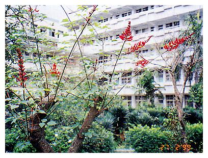 | 珊瑚刺桐 |
| Erythrina corallodendron L. | ||
| 蝶形花科 Fabaceae | ||
| 介紹 | 常綠小喬木，樹幹上有少許刺。葉互生，三出複葉，小葉卵狀菱形，花序頂生，疏總狀花序，花色深紅，長約5～6公分，旗瓣、翼瓣與龍骨瓣在同一平面上，新枝上著生花序，花期長，2～5月開花，如適當修剪幾可四季開花，以阡插繁殖。 | |
| 編號 | 照片 | 名稱 |
| 34 | 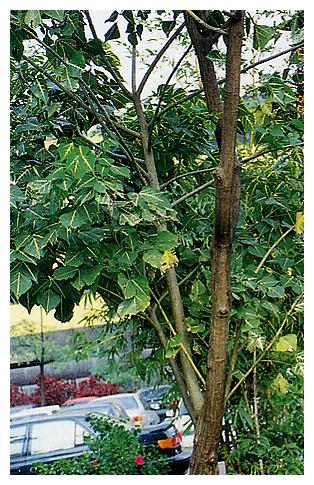 | 黃脈刺桐 |
| Erythrina variegata L. | ||
| 豆科 Leguminosae | ||
| 介紹 | 落葉喬木，三出複葉，葉先端尖銳，沿葉脈外有黃色斑，總狀花序蝶形花，紅色，莢果長達30公分，春天開花，冬天落葉。黃脈刺桐栽培容易，對於土壤選擇不嚴，全日照或半日照皆可，繁殖可用扦插法。 | |
| 編號 | 照片 | 名稱 |
| 35 | 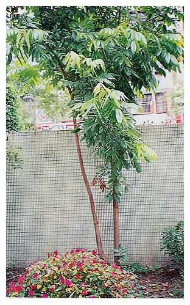 | 龍眼、桂圓、寶眼、亞荔枝 |
| Euphoria longana(Lour.)Steud. | ||
| 無串子科 Sapindaceae | ||
| 介紹 | 常綠喬木，高可達9～12m，葉為偶數羽狀複葉，小葉數4～10片，長橢圓形，全緣，革質，長約8cm，寬約3cm，表面平滑具光澤，葉背面稍白，嫩葉帶淡紅色而下垂。花腋生，圓錐花序，花序有毛，花黃白色，完全花，花瓣有毛，每年3～4月開花，7～8月果實成熟，果為漿果，球形，直徑約2cm，外果皮黃褐色，假種皮為食用部分，白色，半透明，味甜多汁，種子深黑色直徑約1～1.3cm。 龍眼樹皮可種蘭花，樹幹做薪炭，花蜜為蜜蜂吸食後所釀製之蜂蜜特別香醇。果實供食用，龍眼之根可治白帶，風濕關節痛，葉可治感冒，流行性感冒，瘧疾，腸炎，假種皮治神經衰弱，健忘，失眠，貧血。 | |
| 編號 | 照片 | 名稱 |
| 36 | 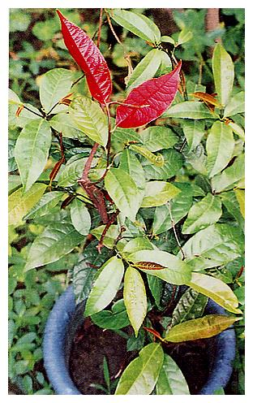 | 紅背桂、青紫木 |
| Excoecaria cochichinensisLour. | ||
| 大戟科 Euphorbiaceaee | ||
| 介紹 | 常綠灌木，葉對生，披針形至卵狀披針形，先端銳形，細鋸齒緣，上表面綠色，下表面紅紫色。聚繖花序腋生，雄花萼片3枚，線狀披針形，雄蕊3枚；雌花萼片3枚，卵形，蒴果。枝葉及細小之花，粗看似桂花。 繁殖可用扦插法。 | |
| 編號 | 照片 | 名稱 |
| 37 | 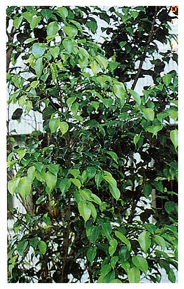 | 垂榕、垂葉榕、白榕、小葉榕 |
| Ficus benjaminal L. | ||
| 桑科 Moraceae | ||
| 介紹 | 常綠多年生大喬木，樹皮灰白色，平滑。莖上會長氣根。葉單一互生，卵圓形或橢圓形，長4～10公分，寬2～4公分，先端短，銳尖，革質，全緣。隱頭花序單生或成對腋生，無柄，開始時是紅色，隨著花之成熟轉為黑紫色。 垂榕之樹皮可製繩索，莖可做木材，葉片搗碎可外敷治潰瘍等症。 | |
| 編號 | 照片 | 名稱 |
| 38 | 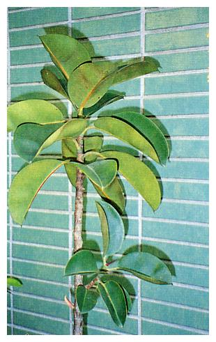 | 橡膠樹、橡皮樹 |
| Ficus elastica Roxb | ||
| 桑科 Moraceae | ||
| 介紹 | 常綠大喬木，原產印度，葉厚革質，氣根發達，葉脈為側出平行脈，全緣，葉面有光澤，葉形為長橢圓形。嫩芽在展開前被紫紅色之托葉包裹著，極似一棵大紅辣椒。花期6～9月，隱花果無柄，橢圓形，單立或對生，果熟時黃色，種子圓形。性極耐旱，喜高溫多濕的氣候，栽培土壤以排水良好之沙壤土為佳，全日照、半日照均可。繁殖以阡插或高壓法在春、夏季進行。 橡膠樹原來之用途是以其樹幹流出之汁液做天然橡膠供製輪胎等使用。近來各國經濟情況轉好，以其樹形優美，將之做為庭園美化栽培使用亦極普遍，此外嫩托葉可食，氣根採收後曬乾煮酒服用可治跌打損傷。 | |
| 編號 | 照片 | 名稱 |
| 39 | 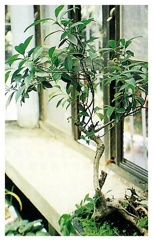 | 榕樹 |
| Ficus microcarpa Linn | ||
| 桑科 Moraceae | ||
| 介紹 | 常綠大喬木，高可達20m或更高，枝幹上會長出許多懸垂之氣生根。樹皮光滑，具有乳白色液汁，全株無毛。葉單生、互生，有葉柄，橢圓形至倒卵形，長6～9cm，寬3～4cm，先端鈍，基部圓至闊銳尖，革質或肉質狀紙質，全緣，上下表面俱光滑無毛。 花小，隱花果，腋生或雙生，球形，徑5～8mm，無柄成熟時紅色。榕樹是台北市之市樹，也是台中、澎湖兩縣之縣樹。 榕樹繁殖可用插枝及種子播種，做行道樹，庭園樹用者多以插枝法繁殖，做盆栽雕成各種樹型者則以種子繁殖。 | |
| 編號 | 照片 | 名稱 |
| 40 | 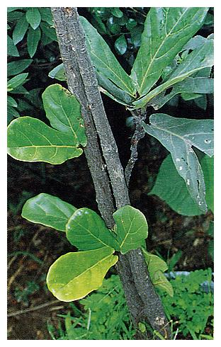 | 琴葉榕 |
| Ficuslyrata Warb. | ||
| 桑科 Moraceae | ||
| 介紹 | 常綠喬木，樹高達十公尺以上。葉片大形，像提琴故名「琴葉榕」，先端鈍而稍闊，基部微凹入，葉柄短，葉為革質，全緣，光滑，深綠色或黃綠色，葉脈中肋於葉面凹下並於葉背顯著隆起，側脈亦相當明顯，隱花果球形，有白斑，成對或單一，無梗。 | |
| 編號 | 照片 | 名稱 |
| 41 | 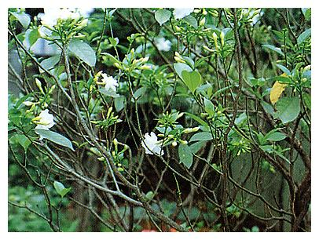 | 山黃槴、黃槴子、山槴、木丹 |
| Gardenia spp. | ||
| 茜草科 Rubiaceae | ||
| 介紹 | 常綠小喬木，嫩枝有微毛，葉對生，少數三片輪生，有短葉柄，葉革質，葉柄內有托葉，長橢圓形或倒卵形，全緣，光滑。 花頂生或腋生，稍大形，白色或淡黃色，單瓣或重瓣，有芳香。花冠高腳碟形，5～8裂，雄蕊及花柱露於冠筒外。花期4～6月，漿果卵形或長橢圓形，有5稜，具宿萼，熟時橙色。成熟之果實，可提取橙色染料作食品添加劑，木材黃褐色，質地緻密，可供雕刻，花具芳香，可做茶之香料，果實可消炎解熱，治胃炎，食道炎，外敷治跌打損傷退腫，葉搗碎外敷可消腫，根及幹可消炎解熱，治牙痛。 | |
| 編號 | 照片 | 名稱 |
| 42 | 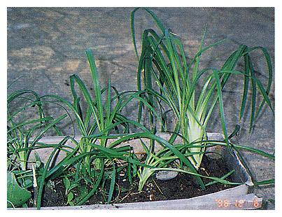 | 萱草、金針、諼草 |
| Hemerocallis fulva（L.）L. | ||
| 百合科 Liliaceae | ||
| 介紹 | 多年生草木，葉線形，長約40～60cm，寬約2～3cm。自地面叢生。葉脈為平行脈，每年五月開花，橙紅色徑約9cm，花被漏斗形，深裂，裂片開展且略反捲，雄蕊6枚，著於花被筒喉部、蒴果。 金針花是中國的母親節之花，除供觀賞外，金針花可鮮食或晒乾儲藏食用，常食可清熱退火，繁殖以分株法。 | |
| 編號 | 照片 | 名稱 |
| 43 |  |
孤挺花 |
| Hippenastrum reginae(L.) Herb. | ||
| 石蒜科 Amaryllidaceae | ||
| 介紹 | 多年生草本，鱗莖圓球形，外被黑褐色膜，葉狹長披針形長35～60cm，花軸由莖基抽出，長40～50cm，每一花軸常為4朵花，花喇叭狀，花被6枚，小蕊6、子房3室、下位。花大型，徑約15公分。花色有粉紅、大紅、白底紅紋、白等，花期在4～6月。 繁殖以播種或以分球或用鱗片繁殖，先產生小球再以小球繁殖。 | |
| 編號 | 照片 | 名稱 |
| 44 | 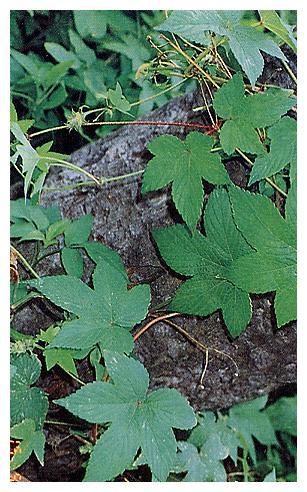 | 葎草、山苦瓜、勒草、鐵五爪龍 |
| Humulus scandens | ||
| 桑科 Moraceae | ||
| 介紹 | 多年生纏繞性草本，莖有很多分枝，莖及葉柄均長有小逆刺。葉具長柄，對生，葉片掌狀五至七裂，兩面粗糙，背有黃色小腺點，葉緣有鋸齒。春夏兩季開花，雌雄異株，雄花開於葉腋，圓錐花序，小花黃綠色，花萼五裂，雄蕊五枚。雌花腋生，穗狀花序，由綠或紫褐色之苞片所包被，子房單一，瘦果扁球狀。 全草及花穗可做藥，具利尿解熱，消腫袪毒，除濕止痢的功效。全草治肺炎，肺結核潮熱，感冒發燒，咽喉腫痛，失眠，胃腸炎，痢疾，膀胱炎，腎炎，痔瘡，肝病，風濕痛。外用將全草或花穗搗碎敷治毒蛇及虫咬傷。花穗功效同全草，外用治腫癤，濕疹，皮膚炎。 | |
| 編號 | 照片 | 名稱 |
| 45 | 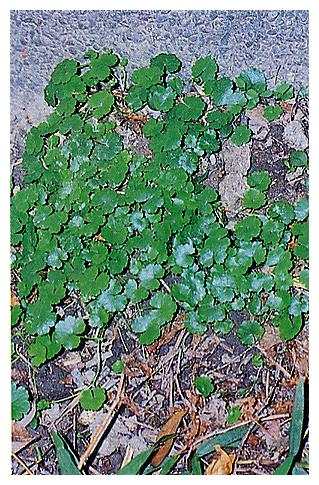 | 天胡荽、遍地錦、滴滴金、圓葉止血草 |
| Hydrocotyle sibthorpioidesLam. | ||
| 繖形科 Umbelliferae | ||
| 介紹 | 多年生草本，匍匐性，在節上長根，全株莖枝光滑無毛。單葉互生，圓心臟形，直徑約5～15公釐，葉片一般作五至九淺裂，每一裂片再作三至五齒裂，連接葉柄處深凹陷，葉柄長0.5～8公分，春、夏、秋三季均會開花，單花細小，綠白色，雄蕊五枚，果實近於圓形，側面扁平狀。 天胡荽之莖全株光滑無毛而雷公根之全株有微毛，天胡荽之葉片淺裂而雷公根之葉片是鈍鋸齒緣，以上兩點可資分辨。 天胡荽全草具有利尿降壓，去痰止咳，清熱降火，解毒利濕之功效；主治黃膽性肝炎，傳染性肝炎，肝硬化腹水，膽結石，尿道結石，泌尿系統感染，百日咳，傷風感冒，淋巴結核，咽喉炎，腸炎，尿血便血，腦膜炎，耳炎等，外用可治香港腳，淋病，梅毒等。 | |
| 編號 | 照片 | 名稱 |
| 46 | 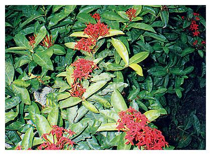 | 紅仙丹、大仙丹、紅繡球 |
| Ixora chinensis Lam. | ||
| 茜草科 Rubiaceae | ||
| 介紹 | 常綠灌木，葉對生，革質有光澤，橢圓或披針形，全緣葉柄甚短。花序頂生，十～卅朵花組成一半圓球形似傘狀，每一朵花有一細長花筒，花瓣四片，花色橘紅至紅，初夏至秋末開花，多以扦插繁殖，根莖煮水喝，可收安胎之效 | |
| 編號 | 照片 | 名稱 |
| 47 | 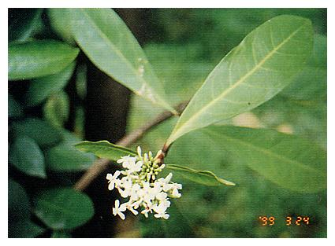 | 白仙丹花 |
| Ixora parviflora | ||
| 茜草科 Rubiaceae | ||
| 介紹 | 落常綠灌木，高可超過2公尺，葉對生，橢圓形，葉尖較紅仙丹花為鈍，花白色，初夏至秋天開花，可用種子繁殖或扦插。 | |
| 編號 | 照片 | 名稱 |
| 48 | 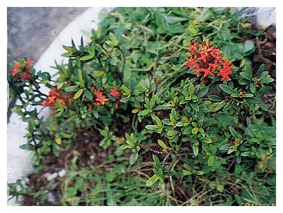 | 矮仙丹花 |
| Ixora x williamsii hort.cv. 'Sunkist' | ||
| 茜草科 Rubiaceae | ||
| 介紹 | 常綠小灌木，高約30公分，葉對生，長橢圓形，革質，花紅色，繖房花序，雄蕊四枚。矮仙丹，花期自初夏至秋末，開花時花團錦簇遮蓋枝葉，一片火紅。適盆栽或庭園及花壇栽培，土壤宜肥沃排水良好，不耐旱，可用扦插繁殖。 | |
| 編號 | 照片 | 名稱 |
| 49 | 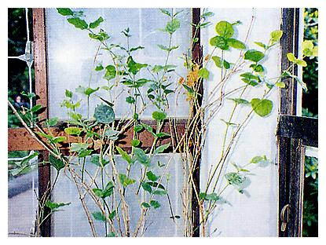 | 茉莉、木梨花、三白 |
| Jasminum sambac | ||
| 木犀科 Oleaceae | ||
| 介紹 | 常綠灌木，枝條略蔓性，幼時具稜且有柔毛，葉對生，闊卵形或卵圓形，先端鈍或凹，基部圓形，長5～8公分，寬3～5公分，全緣。花白色芳香，數朵成繖房狀排列，花萼8～10裂，裂片線形，花冠高碟狀，4裂，裂片長橢圓形至圓形，亦有重瓣者；雄蕊兩枚，隱於冠筒內，漿果。 茉莉花在每年6～10月開花，繁殖可用阡插法，茉莉花香味濃郁，可製茉莉花茶。 | |
| 編號 | 照片 | 名稱 |
| 50 | 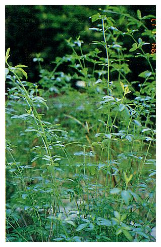 | 雲南黃馨、黃素馨 |
| Jesminum mesnyi Hence | ||
| 木犀科 Oleaceae | ||
| 介紹 | 常綠蔓狀灌木，小枝光滑有四個菱角，株高1～3m，細長懸垂形，葉對生，小葉3枚，長橢圓披針形。花瓣6片金黃色複瓣狀。本島北部在1～3月開花，南部在2～4月開花。 以扦插繁殖，喜溫暖至高溫氣候，全日照、半日照或稍蔭處均可。 | |
| 編號 | 照片 | 名稱 |
| 51 | 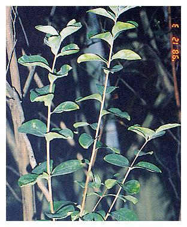 | 紫薇、紅花九芎 |
| Lagerstroemia indica L. | ||
| 千屈菜科 Lythraceae | ||
| 介紹 | 落葉灌木或小喬木，花色有白、紫紅、桃紅，為夏季優良之木本花卉，有「夏季櫻花」之稱。有高、矮兩品種，樹皮光滑常剝落，葉卵形或橢圓形，葉柄甚短，葉互生或近於對生，小枝軟常呈懸垂狀，花著生於枝端的圓錐花序上，花瓣5片，皺縮狀，雄蕊約40個，黃色，夏末秋初盛開，可以播種或阡插繁殖。紫薇花是基隆市之市花。 | |
| 編號 | 照片 | 名稱 |
| 52 | 大花紫薇 | |
| Lagerstroemia speciosa（L.）Pers. | ||
| 千屈菜科 Lythracea | ||
| 介紹 | 落葉中喬木，冬天落葉，春天長出綠葉，葉橢圓形，光頭，互生而近於對生，整個小枝遠看似羽狀複葉。夏日開花，紫色，圓錐花序，頂生，花瓣5片，皺折狀，果為蒴果，圓形，秋後葉片由綠轉紅褐色，然後才落葉。大花紫薇原產印度，引入本島60年，多做為庭園樹或行道樹。以種子播種繁殖。 | |
| 編號 | 照片 | 名稱 |
| 53 | 番茄、西紅柿、番柿 | |
| Lycopersicon esculentum Mill | ||
| 茄科 Solanaceae | ||
| 介紹 | 一年生草本植物，莖半直立性，基部木質化，分枝性強。葉互生羽狀複葉，莖及葉面被毛及油腺，分泌綠色油分，有特殊臭味。總狀或聚繖花序、小花黃色，花萼宿存，果為漿果，多汁，種子多，漿果球形，扁圓形或橢圓形，未熟時綠色，成熟時紅色，粉紅或黃色。 | |
| 編號 | 照片 | 名稱 |
| 54 | 海金沙、吐絲草 | |
| Lygodium japonicum（Thunb.）Sw. | ||
| 海金莎科 Schizaeaceae | ||
| 介紹 | 多年生攀緣性草本植物，根莖細而匍匐，被有硬毛。葉軸呈攀緣狀，葉彼此近生，小葉卵狀披針形，葉緣鋸齒不規則分裂，上部小葉無柄，羽狀或戟形，下部小葉具長柄，葉子很長有孢子葉和營養葉二種，營養葉之小羽片呈3～5裂，中裂片長；孢子葉之小羽片小，深裂成又細又長之裂片。孢子囊長在孢子葉裂片的邊緣，夏、秋季成熟。 海金沙攀緣他物之細長部分是它的葉軸而不是莖，真正之莖很短匍伏在地裏，地面上見到的細長葉子能無限延長。 海金沙全株可食，也可做中藥，全草可活血理傷，散腫解熱利尿，主治腎炎、肝炎、支氣管炎、腮腺炎、尿道炎、流行性B型腦炎、腹脹腰閃、牙痛、腎結石。 | |
| 編號 | 照片 | 名稱 |
| 55 | 芒果、檬果 | |
| Mangifera indica L. | ||
| 漆樹科 Anacardiaceae | ||
| 介紹 | 多年生常綠大喬木，葉叢生於枝端，革質，長橢圓形或長披針形，全緣，中肋兩面均隆起。圓錐花序頂生，有毛；花小形，黃色，核果長橢圓形，腎形或倒卵形，長5~25公分，寬4.5~10公分，熟時黃綠至橙紅色。 果實富含維生素Ｃ，樹皮與葉可提製黑色染料。 | |
| 編號 | 照片 | 名稱 |
| 56 | 土香、香附子 | |
| Mariscus cyperinus Vahl | ||
| 莎草科 Cyperaceae | ||
| 介紹 | 多年生草本，稈高約30cm，葉寬3～6mm，花序為繖形花序或頭狀花序。單立，苞葉4或5枚較花序為長，穗狀花廣圓柱形，5至10，小穗線狀披針形，圓柱形或不明顯三稜形，淡綠色而部分帶有黃色，先端尖銳，花通常1～2朵，穎直立，長橢圓形，內捲，長約3mm，先端鈍形，瘦果狹長橢圓形，具有鈍三稜，為穎之2/3長，柱頭三枚。 香附子含揮發性油，其全草及塊莖水煮後之湯汁，用來疏肝理氣，調經止痛，除熱消痞。塊莖用於治感冒頭痛、中暑頭痛、胸脅疼痛、胃腹脹痛、婦女經痛、月經不調等，全草可治胸中邪熱、心腹客熱、吐血、便血、尿血、腳氣、赤白帶等。 | |
| 編號 | 照片 | 名稱 |
| 57 | 棍棒椰子 | |
| Mascarena verschaffeltii | ||
| 棕櫚科 Palmae | ||
| 介紹 | 單幹直立，高6～10公尺，形態與酒瓶椰子相似，唯幹部膨大的情形不若酒瓶椰子顯著，葉柄及鞘帶一點黃色，果實長橢圓形。 | |
| 編號 | 照片 | 名稱 |
| 58 | 白千層、脫皮樹、日本相思樹 | |
| Melaleuca leucadendra(L.) L. | ||
| 桃金孃科 Myrtaceae | ||
| 介紹 | 常綠大喬木，葉互生，橢圓形披針形或長橢圓形，兩端均銳，革質，平行脈。穗狀花序，夏至秋開花，淡黃白色，頂生，萼鐘形，花瓣五片，雄蕊多數。蒴果成熟後頂端三裂，種子細小。 每年白千層之木栓形成層不斷地分裂，向外長出新皮，所以老樹之樹皮外都有一層厚厚的木栓層，可做瓶塞用。白千層之芽及葉含有芳香精油也叫玉樹油，可做香料。花粉對過敏者會造成呼吸過敏、頭痛、噁心。 | |
| 編號 | 照片 | 名稱 |
| 59 | 白玉蘭、木筆 | |
| Michelia alba DC. | ||
| 木蘭科 Magnoliaceae | ||
| 介紹 | 常綠喬木，枝幹粗大，嫩枝被毛。葉長橢圓形，長約20公分，寬約6～9公分，葉柄基部膨大，上有拖葉痕，葉脈明顯，葉互生，全緣。花長橢圓形，有短梗，肉質，白色有清香，單生葉腋，花瓣10片以上，花蕾外側有褐綠色苞片。白玉蘭之葉可以強鹼處理，除去葉肉，作成葉脈標本，花具清香為人喜愛，也可作香料。根葉可作藥，治泌尿系感染、支氣管炎，花也可作藥以治支氣管炎、百日咳前列腺炎，白帶。 白玉蘭花是嘉義縣之縣花。 | |
| 編號 | 照片 | 名稱 |
| 60 | 含笑花、含笑 | |
| Michelia fuscata(Andr.) Blume | ||
| 木蘭科 Magnoliaceae | ||
| 介紹 | 常綠灌木或小喬木，芽幼枝，葉柄及花苞均密生褐色絨毛。葉互生，長橢圓形，革質，花腋生，花瓣6片，黃白色，有香味，可做為製包種茶之香料，雄蕊甚多呈淺紫紅色，雌蕊綠色，花期12～4月，3、4月盛開。 | |
| 編號 | 照片 | 名稱 |
| 61 | 紫茉莉、胭脂花 | |
| Mirabilis jalapa L | ||
| 紫茉莉科 Nyctaginaceae | ||
| 介紹 | 多年生草本植物，高約50～120cm莖直立，多分枝，葉對生，卵形或卵狀三角形。夏至初冬開花每一總苞內開一朵，傍晚開放；苞片五裂，萼片狀，花被呈漏斗狀，有紫紅、白色、黃色、紅色或斑色，果實卵形，長約8mm，黑色。 紫茉莉之地下塊莖形如小蕃薯，含有毒性，誤食會口舌麻木，皮膚麻木，疼痛，觸覺遲鈍，伴有頭痛頭昏耳鳴，聽力減退等症狀。 | |
| 編號 | 照片 | 名稱 |
| 62 | 芒草、五節芒、鬼芒、寒芒 | |
| Miscanthus floridulus (Lebill)warb. ex Schum.& Laut. | ||
| 禾本科 Gramineae | ||
| 介紹 | 多年生草本，根莖甚長粗厚，匍匐於地中，通常高5m或更高，直立或斜上升，葉片線形或闊線形，長1～1.5m，寬2～3.5cm，節上常呈白粉狀，葉舌圓，長2～2.5mm，邊緣有銳利細鋸齒。 花序為大而擴展的圓錐花序，長40～60cm，花序分枝長15～30cm，直立或斜上升，小穗成對，均相似，穗柄長短不一，小穗軸纖細而連續不斷，小穗長2.5～3mm。 花穗可做掃帚，亦可做花材，莖葉可做牧草及蓋屋頂，嫩筍及新芽可食用；莖有利尿解毒特效，根治咳嗽，白帶。 | |
| 編號 | 照片 | 名稱 |
| 63 | 七里香、月橘 | |
| Murraya paniculata (L) Jack | ||
| 芸香科 Rutaceae | ||
| 介紹 | 常綠灌木、羽狀複葉、小葉互生，卵形、全緣、革質、葉柄甚短，五、六月開花，香氣遠播，故又名七里香。花白色，花瓣五片，雄蕊10，子房2室，每室一胚珠，漿果卵形，幼嫩時綠色，成熟時轉為黃紅或紅色。一般機關或學校、工廠、營房等常栽植以為綠籬，易播種繁殖，果實可食，葉搗碎可敷惡瘡有止痛消腫之效，根葉可治腹痛、痢疾，花晒乾後可泡茶，也可提煉芳香油。 | |
| 編號 | 照片 | 名稱 |
| 64 | 球蕨、腎蕨、玉羊齒 | |
| Nephrolepis auriculata（L.）Trimen. | ||
| 蕨科 Nephrolepidaceae | ||
| 介紹 | 多年生常綠草本植物，根莖短小，根莖上長有許多根狀之走莖，走莖末端長繁生小苗或長出球形貯水器。葉叢生直立，葉柄長5～15cm，葉身為一回羽狀複葉，向兩端逐漸縮小，30～60cm長，羽片無柄基部有關節，乾燥後易脫落，基部並具有一向上耳片，於遠軸面蓋住葉軸。孢子囊群靠近葉緣，長於小脈頂端，囊蓋圓腎形，以孢子繁殖。 腎蕨有一種獨特之莖，叫做貯藏莖，直徑約1～2公分，圓球狀，富含水分，澱粉，可食用。 | |
| 編號 | 照片 | 名稱 |
| 65 | 桂花、木犀銀桂、金桂、丹桂、四季桂 | |
| Osmanthus fragrans(Thunb.) Lour. | ||
| 木犀科 Oleaceae | ||
| 介紹 | 常綠灌木或小喬木，高可達3～5公尺，枝條光滑無毛，葉對生，革質，橢圓形至披針形，先端尖銳，基部銳形，全緣或細鋸齒緣，側脈顯著，雌雄異株，花成簇腋生，有芳香，花色黃白，花梗長約0.5～1公分，纖細，花萼小形4齒列，花冠杯狀，深4裂，雄蕊2枚。桂花於秋季盛開，氣味香郁，桂花可加入茶葉中製成桂花茶，釀酒為桂花釀，桂花製成之食物有生津化痰、養顏美容之效，桂花繁殖用壓條或阡插。 桂花因花色與花期不同分成四個品種，最常見者為金桂、銀桂與丹桂1.金桂：學名Osmanthus fragrans又名金木犀，花朵黃色，花瓣較銀桂大，香氣較濃郁，花期九月～十月。2.銀桂：學名Osmanthus asiaticus又名銀木犀，花色較白，香氣稍淡。3.丹桂：學名Osmanthusfragrans.花色橘紅，甚為名貴，香氣最濃郁，秋季開花，陽明山公園有一株。4.四季桂：四季均開花。桂花是台南縣之縣花。每年八月為桂月。 | |
| 編號 | 照片 | 名稱 |
| 66 | 紫花酢醬草 | |
| Oxalis corymbosa DC. | ||
| 酢醬草科 Oxalidaceae | ||
| 介紹 | 多年生，莖直立或匍匐。葉根出，具長柄，小葉闊倒心形，3片，微凹頭，楔基，繖形花序花1～數朵，紫紅色，多數花具柄，萼片具二褐色腺點，花瓣倒卵狀匙形，雄蕊10，5長5短，下端合生，上端有柔毛，蒴果圓柱形，有毛，成熟後縱裂，種子多數。 地下生鱗莖，鱗片黑褐色，鱗片內著生珠芽，長出為葉，鱗莖下部具紡綞狀半透明塊根，生性強健，以鱗莖繁殖。 酢醬草之鱗莖、花、葉均可食，全草可治咽喉腫痛、腎盂炎、痢疾、白帶、痔瘡、疔瘡等。 | |
| 編號 | 照片 | 名稱 |
| 67 | 紅葉酢漿草、小紅楓 | |
| Oxalis hedysaroidescv. 'Rubra' | ||
| 酢醬草科 Oxalidaceae | ||
| 介紹 | 多年生草本，株高可達一公尺，盆栽僅10～15cm，葉互生，奇數羽狀複葉，小葉卵形，全緣，葉色紫紅或銅紅，明豔似楓。成株開花黃色，小花五瓣，性耐陰。 性喜溫暖，忌高溫及通風不良，排水須良好，日照約50～70%。 | |
| 編號 | 照片 | 名稱 |
| 68 | 雞屎藤、牛皮凍、臭腥藤 | |
| Paederia chinensis Hance | ||
| 茜草科 Rubiaceae | ||
| 介紹 | 常綠灌木，株高約30～70cm，叢生狀，葉劍形略凹，長約20～40cm，寬3～5公分，全緣，近先端處有數枚不明顯疏生短刺，不易開花，平行脈。葉片具特殊香氣（似芋頭香氣），葉片水煮喝其湯液可治糖尿病，也可作食品香料，如煮綠豆湯，蛋糕中加入數枚葉片風味特殊，性強健耐陰，葉色青翠，喜高溫多濕。 | |
| 編號 | 照片 | 名稱 |
| 69 | 香林投、七葉蘭 | |
| Pandanus dorus | ||
| 露兜樹科 Pandanaceae | ||
| 介紹 | 常綠灌木，株高約30～70cm，叢生狀，葉劍形略凹，長約20～40cm，寬3～5公分，全緣，近先端處有數枚不明顯疏生短刺，不易開花，平行脈。葉片具特殊香氣（似芋頭香氣），葉片水煮喝其湯液可治糖尿病，也可作食品香料，如煮綠豆湯，蛋糕中加入數枚葉片風味特殊，性強健耐陰，葉色青翠，喜高溫多濕。 | |
| 編號 | 照片 | 名稱 |
| 70 | 林投、紅刺林投、麻露兜 | |
| Pandanus utilis Bory | ||
| 露兜樹科 Pandanaceae | ||
| 介紹 | 常常綠喬木，主幹下部近地面處生有粗大而直立之氣根。樹幹分枝有輪狀葉痕，葉叢生枝頂，長披針形，葉緣及主脈基部具有紅色銳利鉤刺。雌雄異株，雌花頂生，穗狀花序，無花被，白色佛燄包；雄花呈繖形狀著生，花藥線形與花絲等長。聚合果球形、下垂；核果約100個，成塾時黃色，葉呈螺旋狀著生，是良好的木本觀葉植物。 | |
| 編號 | 照片 | 名稱 |
| 71 | 紫蘇、赤蘇、香蘇 | |
| Perilla frutescens (L.) Britt. | ||
| 唇形科 Labiatae | ||
| 介紹 | 一年生草本植物，莖高可達30～80cm，方形。葉為對生具長柄，寬卵形，前端較尖，葉緣有鋸齒，葉色紫紅，葉面有皺紋，也有上表面綠色，下表面紫色者。自夏到秋枝端會長出花穗，為總狀花序，花小為唇形花，紫色。葉子為紫紅色的稱作花紫蘇，花亦為紫色；綠色葉，白色花的稱作青紫蘇。 紫蘇以種子繁殖，種在有陽光且不太乾燥之處。葉與種子均可做藥，取葉片和種子5～15公克以水400c.c.煎煮一日三次分服，可治咳嗽，感冒，扁桃腺炎，口腔炎時以煎汁漱口，魚肉中毒下痢時，飲用煎汁或生葉搗出之汁可治癒，紫蘇酒可治低血壓，貧血症。 | |
| 編號 | 照片 | 名稱 |
| 72 | 錫蘭葉下珠 | |
| Phyllanthus myrtifoliusMoon | ||
| 大戟科 Euphorbiaceae | ||
| 介紹 | 常綠灌木，莖多分枝，細長，嫩枝褐色，兩列互生而呈羽狀葉。葉兩列互生，線狀倒披針形，長約1.5cm，寬約0.3cm；托葉三角形。花數朵簇生於葉腋，小形粉紅色，花梗纖細而長，花被六枚，基部合生，雄蕊六枚，花盤六淺裂，徑約0.3cm，蒴果球形，成熟時紅色如珠垂掛於葉下故名葉下珠，又原產於錫蘭，故名錫蘭葉下珠。 | |
| 編號 | 照片 | 名稱 |
| 73 | 葉下珠、珠仔草、真珠草 | |
| Phyllanthus urinaria L. | ||
| 大戟科 Euphorbiaceae | ||
| 介紹 | 一年生草本，莖直立，分枝傾臥而後向上生長，具翅狀縱稜，高約十至四十公分。葉互生，長橢圓形，在小枝上排成左右兩列看似複葉，葉片全緣無毛，先端尖突，有很小之托葉，披針形。夏至初秋在葉腋處開出 小型單性花，無花瓣，雌雄同株，雄花二、三朵簇生在葉腋處，萼片六枚，雄蕊三枚；雌花位於小枝近基部處，有萼片五枚，蒴果小，扁球形。葉下珠全草具消炎利尿，清熱明目，消積化石之功效，主治眼結膜炎，角膜炎，傳染性肝炎，黃膽，腸炎痢疾，腎炎水腫，高血壓，尿道及膀胱感染，陰道感染，腸絞痛，月經不調，外用可治皮膚病，腳癬，毒蛇傷（可兼內服）。 | |
| 編號 | 照片 | 名稱 |
| 74 | 琉球松 | |
| Pinus luchuensis Mayr. | ||
| 松科 Pinaceae | ||
| 介紹 | 常綠大喬木，樹皮黑褐色，葉二針一束，長12～18cm。球果卵圓形，長4～5公分，種子具披針形之翅。原產於琉球，本省引進種植供防沙、防潮、防止飛沙之用。 松樹為台北、新竹兩縣之縣樹。 | |
| 編號 | 照片 | 名稱 |
| 75 | 車前草、五根草、蝦蟆衣 | |
| Plantago asiatica L. | ||
| 車前草科 Plantaginaceae | ||
| 介紹 | 多年生草本植物，無莖，具多數細長之鬚根，葉自根際叢出，薄紙質卵形至廣卵形，具五條主葉脈，全緣或波狀，偶有疏鈍齒，兩面無毛或有短柔毛，葉基向下延伸至葉柄，整片葉子連柄長約6～15cm，寬3～8cm。全年皆可開花，穗狀花序從葉叢中抽出，長15～30cm，花冠四裂，雄蕊四枚，果實成熟後會如蓋子般掀開，釋出四至六顆黑色種子，故植物學上稱之為蓋果。 | |
| 編號 | 照片 | 名稱 |
| 76 | 緬槴花、雞蛋花、印度素馨、寶塔樹 | |
| Plumeria rubra L.var.acutifola(Poir. ex Lam.) | ||
| 夾竹桃科 Apocynaceae | ||
| 介紹 | 多年生落葉喬木，葉長橢圓形，兩端漸尖，長逾30cm，葉脈明顯。花清香，漏斗形，花瓣五裂，瓣片圓鈍，盛開夏季。緬槴枝幹受傷會流出乳汁，有毒，不可使之進入人體，緬槴之花可治濕熱下痢，潤肺解毒。 緬槴之繁殖可在早春，選取好樹枝阡插育苗，冬季至翌春落葉後移植。 | |
| 編號 | 照片 | 名稱 |
| 77 | 羅漢松 | |
| Podocarpus macrophyllus(Thunb.) D.Don | ||
| 羅漢松科 Podocarpaceae | ||
| 介紹 | 常綠喬木，葉互生，披針形，雌雄異株，雄花穗狀，3～5簇生於葉腋，雌毬花單生於葉腋。種子卵形初為綠色，熟時呈紫紅色，木材材質緻密為優良建材，果實可做藥，益氣補中，根皮可殺蟲，活血止痛。 | |
| 編號 | 照片 | 名稱 |
| 78 | 到手香、廣藿香 | |
| Pogostemon cablin | ||
| 唇形科 Labiatae | ||
| 介紹 | 株高約15～20cm，葉肥厚，對生，廣卵形，細齒緣。全株密被細毛，具特殊辛香味，葉色常綠，春至秋季可用阡插繁殖。沙壤土，排水良好，日照充足為栽培三要，喜高溫。 到手香可做蛇藥。 | |
| 編號 | 照片 | 名稱 |
| 79 | 馬齒莧、豬母乳、豬母菜、瓜子葉 | |
| Portulaca oleracea L. | ||
| 馬齒莧科 Portulaceae | ||
| 介紹 | 常一年生草本，莖平滑肉質，多分枝，圓柱狀，基部橫臥地上，花枝傾斜向上，株高約10～30cm，多為紫色，幾乎全株光滑無毛。葉肥厚肉質性，互生或對生，有短柄，卵形或倒卵形，先端鈍或圓，長約一至二公分半，寬約四至八公釐。夏季開花，黃色，紅色或白色，無花柄，花瓣五枚，雄蕊七至十二枚，柱頭三至五裂，蒴果長橢圓形。 馬齒莧成熟果實的開裂方式，有如掀開鍋蓋一般，因此植物學上稱為「蓋果」。 馬齒莧莖葉洗淨，沸水燙過再切段炒食，味佳，也可醃漬或晒乾，再慢慢食用。 馬齒莧全草具有涼血解毒，清熱利濕的功效，主治急性盲腸炎，急性腸胃炎，細菌性痢疾，乳腺炎，白帶，痔瘡出血等，兼治膀胱炎，糖尿病，高血壓，腳氣病，產褥熱。 | |
| 編號 | 照片 | 名稱 |
| 80 | 霧水葛、石珠、腫兒消、水雞油 | |
| Pouzolzia zeylanica(L.) Benn. | ||
| 蕁麻科 Urticaceae | ||
| 介紹 | 常多年生草本，莖部有木質化現象，多分枝；葉有柄，對生或互生，卵形或長橢圓形，開花前葉長可達3～4cm，開花後大約只有1～2cm，質薄，乾後成膜狀，全緣，兩面有毛，托葉小形；花腋生，雌雄同株，雄花花被3～5裂，雄蕊4～5枚，雌花花被2～4裂，花柱細長，瘦果有稜，葉片搗碎可敷治腫毒，治牙痛。 | |
| 編號 | 照片 | 名稱 |
| 81 | 普拉特草 | |
| Pratia nummularia（Lam.）A.Br.& Asch | ||
| 桔梗科 Campanulaceae | ||
| 介紹 | 多年生，莖匍匐且具發根性，被毛。葉互生，卵心形，長10～25mm；寬10～20mm，兩面被疏毛，鋸齒緣，葉柄長3～10mm。花單生腋出，花梗長10～20mm，萼片線形，花冠兩側對稱，紫白色，漿果紫色球形，種子卵形，多數。 | |
| 編號 | 照片 | 名稱 |
| 82 | 番石榴、拔仔、巴樂/td> | |
| Psidium guajava | ||
| 桃金孃科 Myrtaceae | ||
| 介紹 | 常綠小喬木，樹皮棕褐色，光滑，老樹皮呈薄片狀剝離。葉對生，有短柄，革質，長橢圓形或卵形，全緣，先端銳，花有梗，腋出，花萼壺形，4～5裂，花瓣4～5枚白色，雄蕊多數。漿果，形態有梨形，圓球形，橢圓，卵圓，依品種而不同。 果實可食，富含維他命C，葉及果可治糖尿病。 | |
| 編號 | 照片 | 名稱 |
| 83 | 鳳尾蕨、鳳尾草、雞足草 | |
| Pteris multifida Poir | ||
| 鳳尾蕨科 Pteridaceae | ||
| 介紹 | 多年生草本植物，根狀莖短，斜上或呈短匍匐狀，表面有黑褐色鱗片。葉片分為兩型，一為不育之營養葉，柄短，葉身廣卵形，二回羽狀複葉，一是能育之孢子葉，在葉背面之葉緣長出孢子囊群，葉身較營養葉狹長，長20～50cm，下部羽片常分成二或三叉。 鳳尾蕨多生於牆角、溝邊、樹下及石灰岩上、草坪、步道邊，潮濕通風，光線不強處。 鳳尾蕨全株採取後洗淨煮水可做為清熱解暑，涼血解毒，治痢止瀉之良藥，主治消炎退燒，降血壓，口腔和胃腸發炎，尿道炎，腎炎，痢疾，血痢等。 | |
| 編號 | 照片 | 名稱 |
| 84 | 安石榴、石榴、榭榴 | |
| Punica granantum L. | ||
| 安石榴科 Punicaceae | ||
| 介紹 | 落葉性灌木，葉脈偶有刺，葉為單葉長卵形，對生或叢生，基部漸狹先端尖，全緣 有光澤，3～6月開花花頂生，紅色，花梗短，花瓣六片有皺摺，花萼厚肉質，筒狀，宿存。果為漿果，球形，熟時澄黃或紅色，味酸甜，種子多數，種子具肉質之假種皮。 石榴之果皮可提製染料，假種皮可食用，味甘酸，果皮為腸之收斂劑可治慢性下痢及腸痔出血，花可止痢，治月經不順及白帶過多，根、莖可驅絛蟲，治敗腎。 | |
| 編號 | 照片 | 名稱 |
| 85 | 旅人蕉、旅人木 | |
| Ravenala madagascariensisSonn. | ||
| 旅人蕉科 Strelitziaceae | ||
| 介紹 | 多年生常綠性植物，高可達6公尺。樹幹像椰子樹，葉像香蕉葉，葉柄在幹頂排列成扇形，大形的白色花朵，由此長出，成熟之種子，種皮藍色。葉柄基部貯存水份可供行人解渴，故名旅人木。 原產非洲馬達加斯加島，以播種或分株法繁殖。 | |
| 編號 | 照片 | 名稱 |
| 86 | 杜鵑花、滿山紅 | |
| Rhododendron Spps. | ||
| 杜鵑花科 Ericaceae | ||
| 介紹 | 常綠或落葉灌木，葉有橢圓形、卵圓形、披針形各種，全緣，有的葉面光滑無毛，有的葉面有茸毛。花冠形狀不一，花形有單瓣、重瓣、花色有各種變化，花期2～4月，蒴果，種子細小。 杜鵑花是台北市的市花，耐貧瘠土壤，對噪音和空氣污染的抵抗力強。本島野生杜鵑卄餘種，其中玉山杜鵑享譽英倫。 | |
| 編號 | 照片 | 名稱 |
| 87 | 大王椰子 | |
| Roystonea regia (H.B.K.) | ||
| 棕櫚科 Palmae | ||
| 介紹 | 常綠大喬木，單幹直立高可達18m，上具環紋，中央部分有不規則性膨大。葉頂生，有光澤，羽狀複葉，葉長3～4m，葉柄短，葉 鞘綠色，環抱莖頂長約葉長的1/3至1/2。肉穗花序著生於最外側之葉鞘著生處，長約30公分至60公分，花乳白色，雌雄同株，雄花花萼3片，花瓣3片，雄蕊6～12；雌花6，果為漿果闊卵形，長一公分，含種子一枚。 大王椰子原產地在中南美洲，本省引進已逾90年歷史，作為園景樹或為行道樹，性喜高溫多濕，日照充足，排水良好之地，以種子繁殖。 | |
| 編號 | 照片 | 名稱 |
| 88 | 非洲堇、非洲紫羅蘭 | |
| Saintpaulia inantha H.Wendl. | ||
| 苦苣苔科 Gesneriaceae | ||
| 介紹 | 多年生草本，葉圓形至卵形，長達6公分，被短毛，具長柄。花8～10朵著生於花莖上，花萼5裂，花冠基部短筒狀，口部開展成盤狀，不整齊5裂，徑約2～3cm，淺藍色或紅紫色，雄蕊2枚，花藥黃色，春夏開 花，蒴果圓柱形，長約1.5cm。 非洲堇性喜蔭涼，栽培品種不下數百，花有單瓣，重瓣者，花色有紫、藍、粉紅、白等，繁殖可用分株法或葉插法。 | |
| 編號 | 照片 | 名稱 |
| 89 | 金葉木 | |
| anchezia speciosrJ. L. eonard | ||
| 爵床科 Acanthaceae | ||
| 介紹 | 常綠灌木，高可達1.6公尺，葉對生，具短柄，卵狀長橢圓形，先端尖銳，基部漸狹，全緣或波狀齒緣，表面深綠，中肋及側脈有黃白色之斑紋。穗狀花序頂生或腋生，苞片紅色，萼片5枚，花冠圓筒狀，雄蕊2枚，不孕雌蕊2枚，蒴果長橢圓形，繁殖以阡插法。 | |
| 編號 | 照片 | 名稱 |
| 90 | 假吐金菊、芫荽草 | |
| Soliva anthemifolia R.Br. | ||
| 菊科 Compositae | ||
| 介紹 | 一年生草本，莖葉綠色，平鋪地上或斜上，分枝甚多。葉互生，一枝莖上有3～4葉，形似紅蘿蔔，長約6cm，2～3回羽狀深裂，裂片線形，全緣或三中裂，表面散生長毛，頭狀花著生短莖上，花黃綠色，簇生枝腋，無柄。 全草具清熱，利尿，解毒，消腫之效，主治頭痛，痢疾，水腫，疔瘡，癰疽。 | |
| 編號 | 照片 | 名稱 |
| 91 | 厚皮香 | |
| Ternstroemia gymnanthera(Wight et Arn) Sprague | ||
| 茶科 Theaceae | ||
| 介紹 | 常綠喬木，小枝灰褐色，葉叢生於枝端，長橢圓形至披針形，長5～7cm，寬1.5～3cm，革質先端鈍或圓，基部銳形；葉柄長0.2～0.8cm，花白色，腋生，花柄長花萼、花瓣各五枚，雄蕊多數，果為漿果，球形，成熟時呈黃紅色，三、四月開花。 厚皮香耐陰、耐旱、抗污染力強，生性強但生長緩慢，以種子及插枝法繁殖。 | |
| 編號 | 照片 | 名稱 |
| 92 | 山黃麻、麻布樹 | |
| Trema orientalis (L.) Blume | ||
| 榆科 Ulmaceae | ||
| 介紹 | 常綠性中至大喬木，幼嫩部分密被毛茸，樹皮灰褐色具多數皮孔，葉互生排或兩排，卵狀長橢圓形，葉片基部一邊大一邊小，細鋸齒緣，表面有粗毛。聚繖花序，腋生、花小兩性花。，綠色，初夏開花，核果成熟時黑色。嫩葉及果實可食。 山黃麻之根可治舌痛腹痛及血尿。 | |
| 編號 | 照片 | 名稱 |
| 93 | 土半夏、犁頭草 | |
| Typhonium divaricatum（L.）Decne. | ||
| 天南星科 Araceae | ||
| 介紹 | 多年生草本植物，葉2～5枚，根出，有長柄，戟形或闊心狀盾形，長5～10cm，寬3～9cm，中裂片闊卵形，頭短尾狀，側片分岔狀，花柄長5～8cm，花軸長10cm，暗紫色，苞片卵狀披針形，佛燄花序，根生，基部為雌花，具雌蕊一枚，子房一室無花被，雄花具雄蕊三枚，花絲甚短。漿果甚小，花期4～5月。 球莖近球形，可治咳嗽，搗碎敷在傷口治蛇咬傷，乳癰，皮膚癢，癰腫等症。塊莖煮熟可食，葉可炒食。 | |
| 編號 | 照片 | 名稱 |
| 94 | 王蘭、刺葉王蘭 | |
| Yucca filamentosa L. | ||
| 龍舌蘭科 Agavaceae | ||
| 介紹 | 原產北美、中美，常綠肉質植物，耐旱、耐強光也耐陰，葉片劍形葉尖尖銳，葉質厚。地下根莖多肉質，可出芽。花序總狀於莖頂抽出長花軸而開花，鐘形、乳白色，果為蒴果。 生性強健，熱帶溫帶皆可生長，抗空氣污染力強，新株夏天開花，老株秋季末開花。 | |